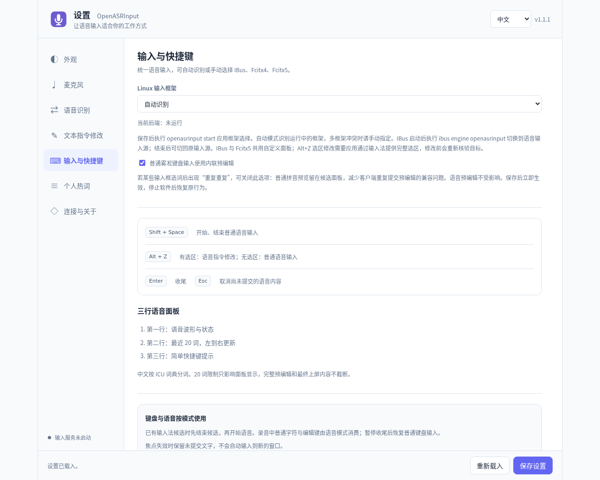
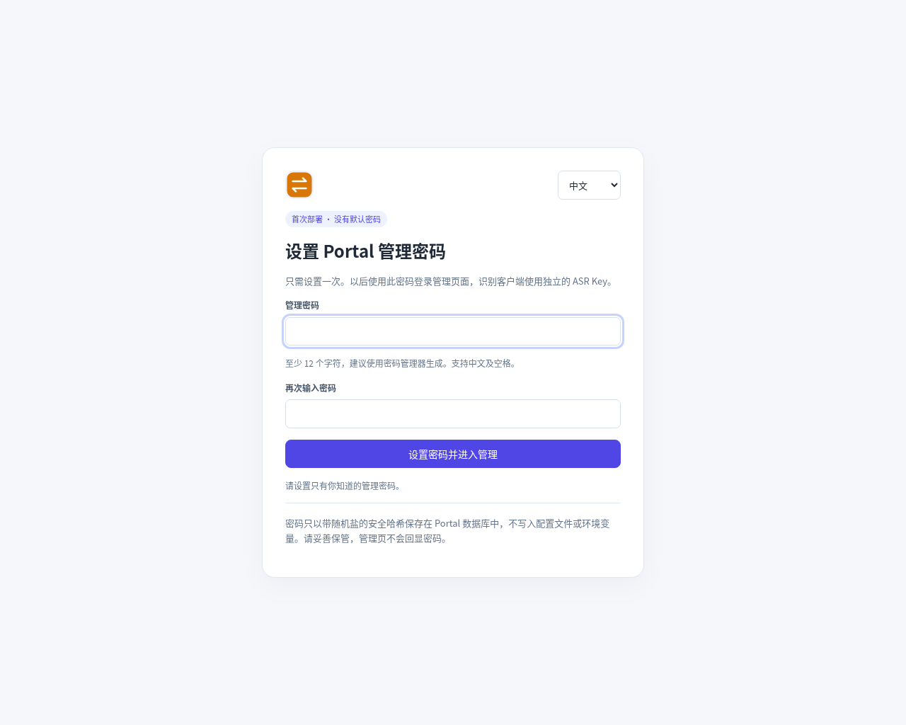

本文适用于 OpenASRInput 1.1.1 + OpenASRPortal 1.1.1。最小目标是：在普通文本编辑器中按下快捷键，说一句话，再正常停止，最后看到稳定文字进入光标位置。你可以只阅读自己平台的小节；已有 Portal 的用户直接安装 Input 并跳到首次连接。
选择安装方式
Input 安装在需要语音输入的桌面；Portal 可安装在同一台电脑、服务器或容器中。本文使用云端 ASR，无需在电脑上安装识别模型，服务开通与配置见上下游接入配置。
| 场景 | 选择 | 还需配置 |
|---|---|---|
| 个人电脑一次安装 | Input + Portal 合体 MSI / DEB | Portal 管理密码、上游、麦克风和输入框架 |
| 已有可达 Portal | 仅安装 Input | 管理员给出的 Portal origin 与客户端 ASR Key |
| 服务和桌面分开维护 | Input 独立包 + Portal 独立包 | 手工派生并填入客户端 Key |
| 服务器或容器化管理 | Portal Docker 镜像包，桌面另装 Input | 持久目录、网络、可选 HTTPS |
Windows 安装包面向 x64 / amd64；Linux DEB 面向 Debian / Ubuntu 系的 amd64 或 ARM64。amd64 同样适用于 Intel 64 位 CPU，不是只给 AMD；ARM64 设备选择 arm64。Input / Portal 原生包包含各自的私有 Python，普通安装不必另外装 Python、Node.js 或 Electron。
获取正确的安装包
确认系统和处理器架构
- Windows：打开“设置 → 系统 → 系统信息（关于）”，查看“系统类型”。显示“64 位操作系统，基于 x64 的处理器”时，选择
windows_amd64.msi。 - Debian / Ubuntu：终端执行
dpkg --print-architecture，输出amd64就选 amd64，输出arm64就选 arm64。 - 其他 Linux / Docker 宿主：执行
uname -m。x86_64对应 amd64，aarch64对应 arm64。Docker 选择运行容器的机器架构，而不是访问网页的电脑架构。
1.1.1 原生安装包覆盖 Windows x64 和 Linux amd64 / arm64。Windows ARM64、32 位系统和 macOS 没有对应的原生安装包；amd64 表示 x86-64 架构，Intel 和 AMD 的常见 64 位电脑都用它。
在 Releases 下载
- 打开 Input 1.1.1 发布页（含合体包），或 Portal 1.1.1 发布页。
- 展开页面底部 Assets，按下表查找产品、系统、架构和扩展名都匹配的文件。
- 下载安装包，以及名称完全相同、末尾多一个
.sha256的校验文件。不要把 GitHub 自动生成的Source code (zip)当成安装包。
| 用途与平台 | 1.1.1 文件名 |
|---|---|
| 合体安装 · Windows x64 | OpenASRInput_1.1.1_windows_amd64_OpenASRPortal_1.1.1.msi |
| 合体安装 · Linux x86-64 | OpenASRInput_1.1.1_linux_amd64_OpenASRPortal_1.1.1.deb |
| 合体安装 · Linux ARM64 | OpenASRInput_1.1.1_linux_arm64_OpenASRPortal_1.1.1.deb |
| 仅 Input | 去掉上述合体包中的 _OpenASRPortal_1.1.1，例如 OpenASRInput_1.1.1_linux_amd64.deb。 |
| 仅 Portal · Windows | OpenASRPortal_1.1.1_windows_amd64.msi |
| 仅 Portal · Linux DEB | OpenASRPortal_1.1.1_linux_amd64.deb 或 OpenASRPortal_1.1.1_linux_arm64.deb |
| Portal · Docker 镜像包 | OpenASRPortal_1.1.1_linux_amd64.tar.gz 或 OpenASRPortal_1.1.1_linux_arm64.tar.gz |
校验下载文件
每个安装包都应同时下载同名的 文件名.sha256，其中只包含该包的一行校验记录。在下载目录执行：
# Linux：以独立 Input amd64 为例
sha256sum -c OpenASRInput_1.1.1_linux_amd64.deb.sha256# Windows PowerShell：与同名 .sha256 内的记录逐字比较
Get-FileHash .\OpenASRInput_1.1.1_windows_amd64.msi -Algorithm SHA256换用 Portal、合体包或 ARM64 时，校验对象也要换成实际下载的文件。合体包名在 Input 包名末尾追加 _OpenASRPortal_1.1.1。
Windows 安装
合体 MSI
- 运行
OpenASRInput_1.1.1_windows_amd64_OpenASRPortal_1.1.1.msi，在向导中保持 Portal 组件勾选，按要求授权安装。 - 安装器为当前桌面账户建立独立的本机 ASR 授权，通过 Input 的公开配置入口交接。这个 Key 不是管理密码；后续安装会复用有效安装身份。
- 首次交互安装在 Portal 尚未初始化时打开本机
/admin/setup。设置管理密码后配置一个识别上游，再完成 Input 的设备与输入检查。
已经有管理员身份时，升级和保留配置后的重装不会要求重新初始化。静默安装 /qn 或设置 OPENASRINPUT_NO_LAUNCH=1 时需自行打开管理页。安装程序不会提供默认管理密码。
独立安装
- 需要本机 Portal 时，运行
OpenASRPortal_1.1.1_windows_amd64.msi，完成系统服务安装。在 Windows“服务”中检查 OpenASRPortal 状态。 - 访问
http://127.0.0.1:10087/admin完成初始化。关闭浏览器不会停止 Portal 服务。 - 运行
OpenASRInput_1.1.1_windows_amd64.msi，从开始菜单打开 OpenASRInput 设置。独立 Input MSI 不包含 Portal。 - 在 Windows“设置 → 隐私和安全性 → 麦克风”允许桌面应用访问麦克风，检查系统声音设置中的设备与静音状态。
- 按首次配置创建客户端 Key，添加 Portal 卡，启动 Input 并检查原生桥接。
已有远端 Portal 时只做第 3、4、5 步。不要在同一个端口再启动第二份 Portal；管理页看起来一样时，实际可能连到了不同的数据实例。
Linux 安装
合体 DEB
在下载目录执行；ARM64 将包名中的 amd64 替换为 arm64：
sudo apt install ./OpenASRInput_1.1.1_linux_amd64_OpenASRPortal_1.1.1.deb
systemctl status openasrportal
curl http://127.0.0.1:10087/healthAPT 使用 openasrinput-portal 管理两款应用。它会替换已有独立的 openasrinput / openasrportal 包并保留产品数据。包内包含私有运行时，但发行版依赖仍可能需要联网安装。
通过普通用户的 sudo 安装时，会连接发起安装的桌面账户；图形包管理器或 root 安装后，从应用菜单打开 OpenASR Input + Portal 配置。需要明确指定账户时：
# 将 alice 换成实际桌面账户；不在终端传入任何 Key
sudo openasrinput-portal-setup --user alice --no-open合体 DEB 的安装阶段不自动打开浏览器，也不重启桌面或输入法。使用配置入口，或手工访问实际 Portal 地址（默认 http://127.0.0.1:10087/admin）完成管理设置。
独立 DEB
# 没有现成 Portal 时安装本机服务
sudo apt install ./OpenASRPortal_1.1.1_linux_amd64.deb
systemctl status openasrportal
curl http://127.0.0.1:10087/health
# 安装输入端；使用已有远端 Portal 时从这里开始
sudo apt install ./OpenASRInput_1.1.1_linux_amd64.deb
openasrinput settings网页日常管理不需要 sudo。Input 的设置与录音应由实际桌面用户启动，以使用正确的麦克风、显示会话和配置文件。
启用输入法引擎
- 进入 Input 的“输入与快捷键”，选择当前桌面实际使用的 IBus、Fcitx5 或 Fcitx4。只有一个框架时通常可以用自动识别；存在多个时明确选择。
- 保存设置，在桌面用户终端执行
openasrinput start。 - IBus：在桌面输入源列表加入 OpenASRInput。注册并启动后，也可以执行
ibus engine openasrinput切换。 - Fcitx5 / Fcitx4：打开相应框架配置工具，确认 OpenASRInput 已加载，在该框架的输入上下文中验证快捷键。
- 新安装引擎仍未被桌面发现时，保存工作后按桌面要求重新登录，再检查输入源。
Fcitx4 仅适用于 X11。Wayland 的面板定位、预编辑和选区读取要结合桌面与目标应用判断。设置网页中的下拉框只保存 Input 的选择，不会替代系统框架的注册与启用。demo 使用内存目标，不能当作真实上屏测试。

Portal Docker 部署
解压匹配架构的 OpenASRPortal_1.1.1_linux_amd64.tar.gz，进入包内 OpenASRPortal 目录。该包包含真实镜像 image.tar、部署配方和说明；Input 需在桌面另行安装，云端识别账号需自行开通。
docker load -i image.tar
cp .env.example .env
mkdir -p data
sudo chown 10001:10001 data
docker compose up -d
docker compose ps
docker compose logs --tail 50 portal以上是 Linux 宿主命令；Docker Desktop 的共享目录权限按宿主方式设置。没有 Compose 插件时，可以使用独立 Compose v2 的 docker-compose 命令。
在启动前检查 .env。使用安装包提供的镜像名，不要照抄源码模板中的占位符：
| 变量 | 作用 |
|---|---|
OPENASRPORTAL_IMAGE | 刚刚导入且架构匹配的镜像。 |
OPENASRPORTAL_BIND | HTTP 方案的宿主监听地址，默认 127.0.0.1。 |
OPENASRPORTAL_PORT | HTTP 方案的宿主发布端口，默认 10087。 |
OPENASRPORTAL_DATA | HTTP 方案的持久目录，默认 ./data；容器 UID 10001 必须能写入。 |
打开 http://127.0.0.1:10087/admin 初始化即可。docker compose down 停止 HTTP 方案并保留绑定目录。如果重建后突然出现首次设置页，先检查是否换了部署目录或数据挂载，不要急着创建另一套空配置。
首次配置与短句测试
初始化 Portal
- 访问实际实例的
/admin。首次进入设置页，创建并确认至少 12 字符的管理密码。 - 登录后进入“上游 ASR 接入 → 增加服务接入”，选择一个提供商，填写档案 ID、名称、上游 Key 和提供商参数。四种云端上游的开通步骤见上下游接入配置。
- 测试当前配置，成功后点击“保存接入配置”，保持启用。首个档案会成为默认；需要时手工“设为默认”。测试不会替你保存。
- 独立安装或远端客户端：在“下游客户端”填写设备或使用者名称，如“办公电脑 Input”，点击“派生 ASR Key”。将 Portal 地址与这份 Key 配对交给 Input。
- 合体安装已完成本机授权交接时，先检查 Input 中的已有连接；只有交接未完成或需要独立设备授权时才另行派生。
地址与 Key 的正确搭配：Input 填 http://127.0.0.1:10087 这样的 HTTP(S) origin，加 Portal 派生的客户端 ASR Key。不要带 /admin，不要用上游地址、管理密码或云平台 Key 替代。

连接 Input
- 打开“语音识别 → 新增 Portal 卡”，填写名称、Portal 地址与客户端识别 Key。
- “识别配置 ID”留空可跟随 Portal 默认。需要固定某一档案时填写管理员给出的 ID，例如
bailian-main，不是卡片显示名称或模型名。 - 点击“测试状态与时延”，核对鉴权和档案查询；然后点击“保存并新增 Portal 卡”，再在已保存的卡片上点击“使用此 Portal”。修改已有卡片时使用“保存此卡”。
- “麦克风”先选系统默认设备；“连接与关于”检查运行状态、最近错误与实际配置路径。Linux 继续确认输入框架已启用，Windows 确认桥接运行。
- 普通编辑器中点出光标，Shift+Space 开始，说一句短语，再按一次结束，等待稳定定稿进入文档。
- 到 Portal“用量与统计”查询该客户端和上游，确认本轮归属。只有面板有文字而编辑器无文字时，检查输入桥接与焦点。
这里包含三种不同检查：/health 证明服务存活；Input 连接测试证明网关认证与档案查询；短句识别加原生上屏才覆盖实际使用链路。管理页或连接测试成功不能代替最后一步。

远程访问与 HTTPS
客户端中的 127.0.0.1 永远指客户端自己。另一台电脑上的 Portal 必须提供那台服务器的可达地址；跨网络部署使用 HTTPS origin，例如 https://asr.example.com。域名示例需替换为自己的真实服务地址。
使用 HTTPS 配方
compose.https.yaml 是完整的独立方案：NGINX 发布 80 / 443，Portal 只在容器网络监听，默认使用 portal-data 命名卷。它不是 compose.yaml 的覆盖层，两份文件不要叠加启动。
- 按 Docker 部署步骤导入 Portal 镜像、准备
.env；额外准备nginx:1.28-alpine。 - 把覆盖实际 DNS 名或 IP 的完整证书链放到
tls/server.crt，对应私钥放到tls/server.key。 - 在
.env添加OPENASRPORTAL_HTTPS_BIND，值设为需要监听的网卡地址；默认回环，远程访问需明确调整。 - 使用下列命令启动，并通过证书覆盖的 HTTPS 地址访问管理页。
docker pull nginx:1.28-alpine
docker compose -f compose.https.yaml up -d
docker compose -f compose.https.yaml ps
docker compose -f compose.https.yaml logs --tail 50 portal nginx自签名证书的生成、SAN 配置和信任步骤见原始容器部署手册。客户端只分发公有证书；浏览器与 Input 私有 Python 的信任库可能不同，要分别验证。Input 可能拒绝重定向，因此直接填 HTTPS 地址。使用自己的反向代理时，要支持 WebSocket Upgrade 及足够的流式收尾时间。
迁移已有数据
HTTP 默认绑定 ./data，HTTPS 默认用命名卷。切换方案时先结束录音、停止旧方案、备份数据；需要沿用旧目录时，将 HTTPS 配方中 Portal 的挂载改成实际目录，例如 ./data:/data，确认 UID 10001 写权限，再启动。不要把新卷里的首次设置误认为升级丢失数据。
容器连接上游
Portal 容器内的 127.0.0.1 是容器本身。云端服务的域名需能从容器内解析和访问；若使用宿主机上的代理，可用配方支持的 host.docker.internal，同时要求代理监听容器可达接口。Input 的地址仍然是 Portal 的 HTTP(S) origin，上游的 WSS 地址只配置在 Portal。
配置目录、备份与升级
| 平台 | Input | Portal |
|---|---|---|
| Windows 当前安装 | %ProgramData%\OpenASR\Input\<SID>\input.json | %ProgramData%\OpenASR\Portal\service.json 与同目录下的 data\ |
| Linux 当前安装 | /var/lib/openasr/input/<uid>/input.json | /var/lib/openasr/portal/service.env 与 data/ |
| 源码 / 自定义实例 | 可能回退 APPDATA / XDG，或由 OPENASRINPUT_CONFIG 指定 | 实际 --data-dir / OPENASRPORTAL_DATA / Docker 挂载 |
SID / UID 是系统账户标识，不是显示名称。Input 各用户文件私有；公共父目录不意味着共享 Key 或数据库。“连接与关于”显示的实际配置路径比猜默认目录更可靠。
迁移与设置生效
Input 旧 APPDATA / XDG 默认配置与卡片元数据只复制迁移一次，运行会话标记不迁移。Portal 停服后迁移旧默认目录，例如 %ProgramData%\OpenASRPortal、/var/lib/openasrportal 和 /etc/openasrportal/service.env。旧副本保留用于恢复，显式指定的自定义配置与数据目录保持其隔离用途。
Input 的通用“保存设置”和连接卡的独立保存不是同一操作。设备、Portal 卡和文本模型变更主要用于下一轮；输入框架保存后执行 openasrinput start，socket 更改需要下次启动守护进程。Portal 上游保存后用于新会话，服务监听配置则需重启服务。
Linux 若修改 OPENASRPORTAL_DATA，先停止服务，再重配置包以同步 systemd 的目录访问例外：
sudo systemctl stop openasrportal
# 先编辑实际 service.env 并迁移数据、恢复服务账号访问权限
sudo dpkg-reconfigure openasrportal
sudo systemctl start openasrportal合体包将中间命令换成 sudo dpkg-reconfigure openasrinput-portal。只修改环境变量而不更新沙箱例外，可能导致服务不能写入新目录。
备份与恢复
- 正常结束录音、保存目标文档、退出 Input，停止相应 Portal 服务或 Compose 方案。
- 备份 Input 实际配置目录；个人热词另行导出，因为服务器端词表属于 Portal。
- 备份 Portal 整个数据目录或卷，尤其是
portal.db与asr-key-vault.key，同时保留部署配置和 TLS 材料。只拷贝运行中的数据库主文件可能遗漏 WAL。 - 升级或迁移后恢复文件权限，启动服务，核对管理登录、上游、客户端 Key、热词和余额。
- Input 重新核对麦克风、输入框架与当前卡，用短句验证识别和上屏。换机器时不要沿用不适用的设备 ID 或 socket 路径。
Docker 移动部署目录时保留 Compose 项目名，或明确迁移命名卷。down -v 会删除命名卷，不是普通停止命令。
卸载与重装
Windows 卸载提供保留或明确删除配置的选择；Linux apt remove 保留产品数据，合体包可用 sudo apt remove openasrinput-portal 一次卸载，产品数据在 purge 后也保留。保留配置后重装会复用管理员、客户端 Key 和词表；从未完成初始化时则继续引导。要从合体包改回独立包，用 APT 同时安装两个独立 DEB 进行替换。
源码运行（可选）
源码适合开发、调试或审阅实现，不要求普通使用者克隆整个工作区。Input 与 Portal 各自建立虚拟环境，不能借用对方或外层环境。Python 基础要求为 3.10+；Portal 使用 HTTPS 代理时需 Python 3.11+。
启动 Portal
在 Portal 源码根目录执行，选择未被其他实例占用的端口和隔离数据目录：
python3 -m venv .venv
.venv/bin/python -m pip install -e .
.venv/bin/python -m openasrportal \
--data-dir runtime/portal --host 127.0.0.1 --port 10087Windows 使用 py -3.12 -m venv .venv 和 .venv\Scripts\python.exe 执行相同模块命令。首次管理仍在 /admin；账号与 Key 由产品管理，不通过旧凭据环境变量替代初始化。
启动 Input 设置
在 Input 源码根目录执行：
python3 -m venv .venv
.venv/bin/python -m pip install -e '.[portal]'
bash scripts/start.sh settingsWindows 对应安装命令为 .venv\Scripts\python.exe -m pip install -e ".[portal]"，设置入口为 .venv\Scripts\python.exe -m openasrinput settings。原生输入另需平台桥接及工具链；Linux 需要相应框架开发库，Windows 需要 .NET / C++ 工具。详见产品开发说明。
参考资料
参考 Input / Portal 1.1.1 安装文档与发布附件。截图为 Linux 上运行的 1.1.1 配置界面，不是 Windows 安装向导。文档与截图 © 2026 OpenASR contributors / MarmaladeCat，按 GPL-3.0-only 提供。